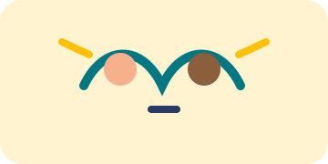
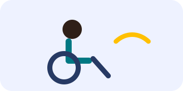
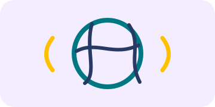
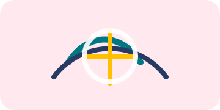
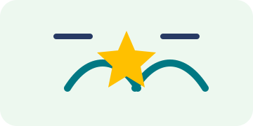

Management inclusif
Équité, reconnaissance, décisions, feedback et coopération.
Découvrir les situationsChaque thématique donne accès à des situations propriétaires, structurées par chapitres.
Équité, reconnaissance, décisions, feedback et coopération.
Découvrir les situations
Stéréotypes, micro-agressions, comportements sexistes et prévention.
Découvrir les situations

Préjugés, représentations, équité et inclusion au quotidien.
Découvrir les situations

Comprendre, respecter, neutralité et situations sensibles.
Découvrir les situations